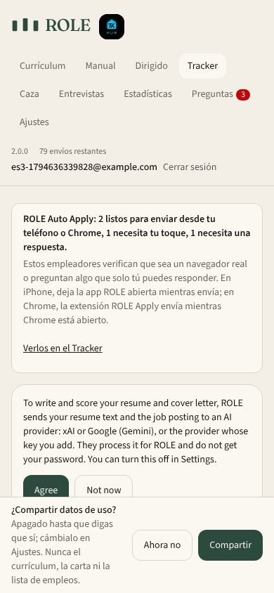
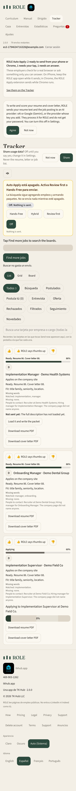
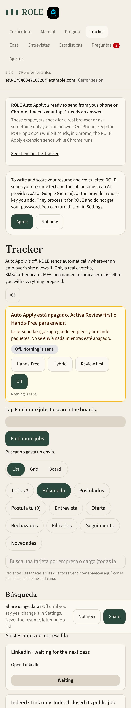
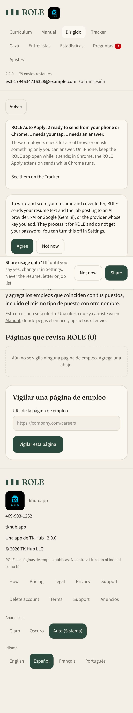

Screenshots of the signed-in app (work-branch build, Demo Mode sample jobs, a local test account), language set to Español. New this round: the Tracker's heading, all ten tabs, the Auto Apply-off notice, search help, receipts and tab notes, the find box, the Targeted page, and the Currículum / Caza menu items. English wording is unchanged. Also new: the Auto Apply notice card and the usage-data card. Still English: the AI-consent notice (waiting on Terrell's decision) and the job cards.



